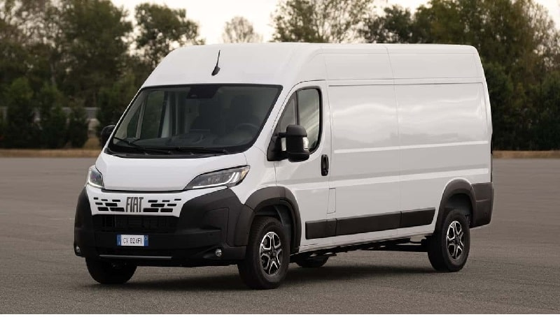

İşyeri ve mağaza kolileri
Kutulanmış ürün, numune ve küçük ticari gönderilerde paket sayısını ve içerik türünü yazın. Teslimin iş saatinde veya randevuyla yapılması gerekiyorsa bunu ekleyin.
Ankara’dan Bursa’ya koli, paketli mobilya ve küçük hacimli işyeri yükleri için ambar nakliye teklifi alın. Nilüfer, Osmangazi, Yıldırım veya diğer ilçelerdeki teslim adresine göre sevkiyatı birlikte planlayalım.
7/24 iletişim: 0544 868 63 58 · Sefer tarihi ve teslim aralığı görüşmede teyit edilir.
Gönderinin içeriği, boyutu ve iki adresteki koşullar üzerinden planlama.
Bursa’ya parça yük gönderirken yalnızca Bursa merkez demek çoğu zaman yeterli değildir. Nilüfer’de bir işyeri, Osmangazi’de bir konut ve Yıldırım’da bir mağaza farklı teslim noktalarıdır. Ankara Bursa ambar nakliye talebinde ilçe ve açık adresi baştan paylaşarak şehirler arası taşıma ile son teslim aşamasını birlikte değerlendirebilirsiniz.
Koli, kutulanmış ürün, paketli mobilya ve küçük ofis eşyalarında yükün hacmine uygun taşıma seçeneği sunuyoruz. Ambar kargo veya parsiyel taşıma arayışında olan göndericiler için paket sayısı, içerik, hazır olma tarihi ve alıcı bilgisi önem taşır. Yükün özelliklerine göre düzenli hat üzerinde uygun sefer ya da ayrı araç seçeneği değerlendirilir.

Teklif öncesi doğru eşya bilgisi, uygun araç ve işçilik kapsamını değerlendirmeyi kolaylaştırır.
Kutulanmış ürün, numune ve küçük ticari gönderilerde paket sayısını ve içerik türünü yazın. Teslimin iş saatinde veya randevuyla yapılması gerekiyorsa bunu ekleyin.
Paketli masa, sandalye, koltuk ve ofis ekipmanları için ölçü ve fotoğraf gönderin. Geniş parçaların bina kapısından ve asansörden geçişi önceden değerlendirilmelidir.
Bursa’daki bir yakına veya yeni adresinize gidecek az eşyalı gönderiler için eşya listesi hazırlayın. Kırılacak, elektronik veya özel yerleşim isteyen parçaları belirtin.
Bursa’da bir işletmeye gönderi yapacaksanız alıcı firma adı, ilgili kişi ve teslim kabul aralığını yük bilgisine ekleyin. Güvenlik kaydı, randevu, rampa veya belirli bir kapıdan giriş gerekiyorsa önceden bilinmesi gerekir. Alıcıyla görüşülmeden belirli bir saat varsaymak yerine, işletmenin kabul koşullarını sevkiyat planıyla eşleştirin. Çok paketli gönderilerde paketleri numaralandırmak teslim kontrolünü kolaylaştırır.
Alım ve teslim ilçesi, kat, asansör ve araç erişimi teklifin kapsamına yön verir.
Ankara çıkışında Çankaya, Yenimahalle, Etimesgut, Sincan ve diğer ilçelerdeki alım noktaları, yükün konumuna ve araç planına göre değerlendirilir. Bir işyerinin deposundan alınacak yük için rampa veya görevli bilgisi; evden alınacak eşya için kat ve asansör durumu paylaşılmalıdır. İstenen işçilik kapsamı bu bilgilerle belirlenir.
Bursa tarafında Nilüfer, Osmangazi, Yıldırım, Kestel ve Gürsu gibi ilçelerde açık adres önemlidir. Gemlik, Mudanya veya başka bir ilçeye sevkiyat varsa bunu merkez teslimi olarak belirtmeyin. İnegöl’e giden mobilya ve parça yükler için ayrıca hazırlanan Ankara İnegöl sayfasını kullanabilirsiniz; böylece talep doğrudan doğru teslim ilçesi üzerinden açılır.
İnegöl teslimleri için Ankara İnegöl ambar nakliye bilgileri →
Yük ve adres bilgisine göre taşıma bedelini, işçilik kapsamını ve sefer uygunluğunu birlikte netleştirelim.
Ankara Bursa ambar fiyatı; paketli yük hacmi, ağırlık, teslim ilçesi, tarih ve işçilik ihtiyacı birlikte görüldüğünde netleşir. Bursa’nın farklı ilçeleri için aynı fiyatın geçerli olacağını varsaymadan açık adresle teklif isteyin.
Teklif isterken paketli eşya fotoğraflarını ve listenizi WhatsApp’tan iletebilirsiniz. Yükün hazır olacağı gün ile istediğiniz teslim aralığını ayrı ayrı yazın. Paketleme, söküm, montaj veya kata taşıma beklentiniz varsa görüşmede belirtin; kapsamı birlikte değerlendirelim.
Güzergâhınız için fiyat isteyinHer iki taraftaki bilgileri tek bir taşıma planında birleştirelim.
Eşya listesini, paket ölçülerini ve fotoğrafları alım ve teslim adresleriyle birlikte paylaşın.
Araç seçeneği, fiyat, işçilik kapsamı ve uygun sefer tarihi görüşmede değerlendirilir.
Yükün hazır olduğu gün, ilgili kişi ve paket listesiyle alım randevusu koordine edilir.
Alıcı, teslim edilen paketleri listeyle karşılaştırır; sevkiyat planındaki adreste teslim süreci tamamlanır.
Yükünüzün ayrıntılarını görüşmek için telefon veya WhatsApp’tan ulaşabilirsiniz.
0544 868 63 58Koli, paketli mobilya, kişisel eşya ve küçük hacimli işyeri gönderileri için teklif isteyebilirsiniz. Yük türü, ölçüler ve ağırlık incelenerek uygun taşıma seçeneği değerlendirilir.
Teslim ilçesi, açık adres, araç erişimi ve istenen işçilik teklifi etkileyebilir. Nilüfer, Osmangazi, Yıldırım veya merkez dışındaki bir ilçe için gerçek teslim adresini paylaşın.
İnegöl teslimlerinde Ankara İnegöl ambar nakliye sayfasını kullanabilirsiniz. Bu sayfada mağaza, üretici ve konut teslimine yönelik yükleme bilgileri ayrıca anlatılır.
Teslim aralığı güncel sefer, yükün hazır olması ve alıcı adresindeki kabul koşullarına göre teyit edilir. Zorunlu bir tarih veya saat varsa ilk görüşmede belirtin.
Formdaki bilgiler mesaj olarak hazırlanır. WhatsApp’ta kontrol edip gönderin; ardından eşya fotoğraflarını ekleyebilirsiniz.
Gidiş ve dönüş yönünü seçin. Her hat için yük hazırlığı, adres bilgisi ve teklif ayrıntılarına ulaşın.
Düzenli hatlar için güncel sefer günü ve araç uygunluğu yükünüze göre teyit edilir. Diğer illerde alım ve teslim talepleri tarih ve adres bilgisiyle değerlendirilir.